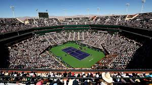

Arrancan los Cuartos de Final de Indian Wells
Continúa el Máster 1000 de Indiana Wells con los Cuartos de Final, ya sin Djokovic ni argentinos en la competencia.

Desde las 15:00 horas, el escenario del tenis se preparará para los Cuartos de Final
del primer Máster 1000 del año. En su edición número 49° celebrada en la ciudad
de California, Estados Unidos y ya sin figuras como Novak Djokovic que cayó ante
el inglés Jack Draper por 6-4, 4-6 y 6-7, el cuadro ya está definido.
El británico, que además de vencer al serbio también hizo lo propio con el argentino
Francisco Cerundolo, ahora enfrentará a Daniel Medvedev (11°) que viene de
derrotar a Alex Michelnsen por 6-2 y 6-4 y de eliminar a Sebastian Baez de la
competencia en la ronda de 32. El enfrentamiento será a las 21:00 horas del horario
argentino.
A su vez, el número 1 del ranking ATP, Carlos Alcaraz, que venció a Arthur
Rinderknecht por 6-7, 6-3 y 6-2, se medirá ante Cameron Norris (29°) en el último
duelo del día, a las 23:00 horario argentino. Ante él, el murciano tiene un historial
positivo de 5-3, sin embargo, Norris se llevó tres de sus últimos cinco duelos
Otro tenista que sigue en competencia es Jannick Sinner. El italiano se impuso ante
el brasileño Joao Fonseca por 7-6 y 7-6 y ahora tendrá que batirse con Learner Tien
a las 17:00 horario argentino. El norteamericano llegó hasta esta instancia luego
de vencer a Alejandro Davidovich y Ben Shelton.
Por último, el alemán, cuarto puesto del mundo, Alexander Zverer, sacó del torneo al
estadounidense Frances Tiafoe con 6-3 y 6-4, se citó en el primer duelo del día con
Arthur Fills (32°) a las 15:00 horas argentina. El francés ingresó en este selecto
grupo tras ganarle a Felix Aunger Aliassime por 6-3 y 7-5.
Horacio Zeballos, tras las semis en dobles
Argentina aún tiene esperanzas en los dobles, donde Horacio Zeballos y el español
Marcel Granollers se medirán ante la dupla de Constantin Frantzen y Robin Haase a las 16:00
horario argentino. La dupla argentino-española logró vencer a grandes competidores como la
dupla de Jack Sinner y Opelka por 6-4 y 6-4, avanzando así, hacia esta instancia.
Además, Horacio puede ir tras un récord personal, volver a ser top 1 del mundo
Con la eliminación del italiano, el argentino tan solo necesita llegar hasta las
semifinales para poder seguir en la carrera por el primer puesto.
Otro argentino que sigue en comptenecia es Guido Andreozzi. Con su compañero
Manuel Guidnard, enfrentarán a Christian Harrison y Neal Skupski.
El torneo, que se disputa anualmente en el Indian Wells Gardner de la ciudad de
Indian Wells, en Estados Unidos se podrá disfrutar por la pantalla de ESPN y Disney+.